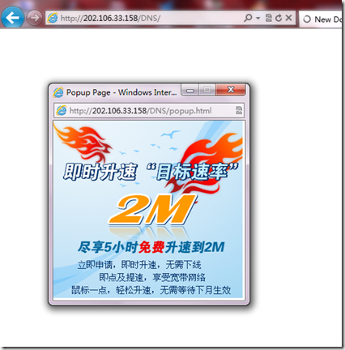

文章
83
标签
129
分类
7
时间线
标签
笔记
友情链接
其他
作品
文件
关于
all4fun blog
北京联通DNS劫持！
返回首页
时间线
标签
笔记
友情链接
其他
作品
文件
关于
北京联通DNS劫持！
发表于
2011-08-31
|
乱七八糟
|
浏览量:
2011年8月31日凌晨上网时候访问自己的域名，发现被联通劫持到了http://202.106.33.158/DNS/这个页面！连续试了几次都是如此，太过分了！如截图所示

截图为证
文章作者:
all4fun
文章链接:
http://wangheng.org/unicom-dns-hijacking.html
版权声明:
本博客所有文章除特别声明外，均采用
CC BY-NC-SA 4.0
许可协议。转载请注明来源
all4fun blog
！
DNS
劫持
联通
赞助
微信
支付宝
上一篇
C#使用委托与多线程，解决界面假死
.NET Framework 为我们提供了一个处理控件闪烁的方案-双缓冲，我们可以直接调用它。 首先自己封装一个Windows组件 MyListView.cs，并让它继承自Listview。 在控件中添加打开双缓冲的代码如下： public MyListView() { // 打开控件的双缓冲 SetStyle(ControlStyles.OptimizedDoubleBuffer | ControlStyles.AllPaintingInWmPaint, true); } 使用我们封装的MyListview 实例化一个对象，命名为ImageListView, 执行下面的方法来实现异步数据加载 private void button1_Click(object sender, EventArgs e) { Thread ImageThread = new Thread((ThreadStart)(delegate() { for (int i = 0; i
下一篇
互联网常见Open API文档资源(转载)
所谓的开放API（OpenAPI）是服务型网站常见的一种应用，网站的服务商将自己的网站服务封装成一系列API（Application Programming Interface，应用编程接口）开放出去，供第三方开发者使用，这种行为就叫做开放网站的API，所开放的API就被称作OpenAPI（开放API）。 网站提供开放平台的API后，可以吸引一些第三方的开发人员在该平台上开发商业应用，平台提供商可以获得更多的流量与市场份额，第三方开发者不需要庞大的硬件与技术投资就可以轻松快捷的创业，从而达到双赢的目的，开放API是大平台发展、共享的途径，让开发者开发一个有价值应用，付出的成本更少，成功的机会更多。今天，OpenAPI作为互联网在线服务的发展基础，已经成为越来越多互联网企业发展服务的必然选择。下面我就列举一些常见网站服务的Open API文档资源索引。 SNS类网站API Facebook - http://developers.facebook.com/ 人人网开放平台 - http://dev.renren.com/ 51.com开放平台 - http://develope...
相关推荐
2012-06-11
Linux临时或永久修改DNS
最近给VPS重装了系统，因为服务商不提供DHCP，所以只好手动设置IP和DNS Server。悲催的是系统重装的时候忘记了输入DNS Server，最后导致进去系统后，各种域名无法解析。 Linux中修改DNS有两种方式，临时修改和永久修改，下面分别介绍。 1、临时修改网卡DNS地址sudo vim /etc/resolv.conf改为如下内容： nameserver 8.8.8.8 #修改成你的主DNS nameserver 8.8.4.4 #修改成你的备用DNS search localhost #你的域名 我这里用了谷歌的DNS解析服务器，修改后:wq退出，配置会实时生效，但是重启系统后可能会丢失配置。其实编辑这个文件的时候，你也应该能看到文件头部“不要手动编辑”的注释。 2、永久修改网卡DNSsudo –icd /etc/resolvconf/resolv.conf.dvim base添加如下内容 nameserver 8.8.8.8 nameserver 8.8.4.4 :wq 保存退出，这样重启后设置就不会丢失了。 其实你cat head文件会找到图片中头部...
all4fun
make progress little day by day.
文章
83
标签
129
分类
7
Follow Me
公告
VPS 香港服务器推荐：
VollCloud HK CMI服务器
最新文章
从wordpress迁移到hexo填坑
2018-10-22
kuaipan_uploader开发分享
2015-05-27
linux版快盘上传下载脚本
2015-05-13
ubuntu 安装配置denyhosts
2015-05-06
raspi+DHT11+yeelink监控家里温湿度
2015-01-28
 微信
微信 支付宝
支付宝